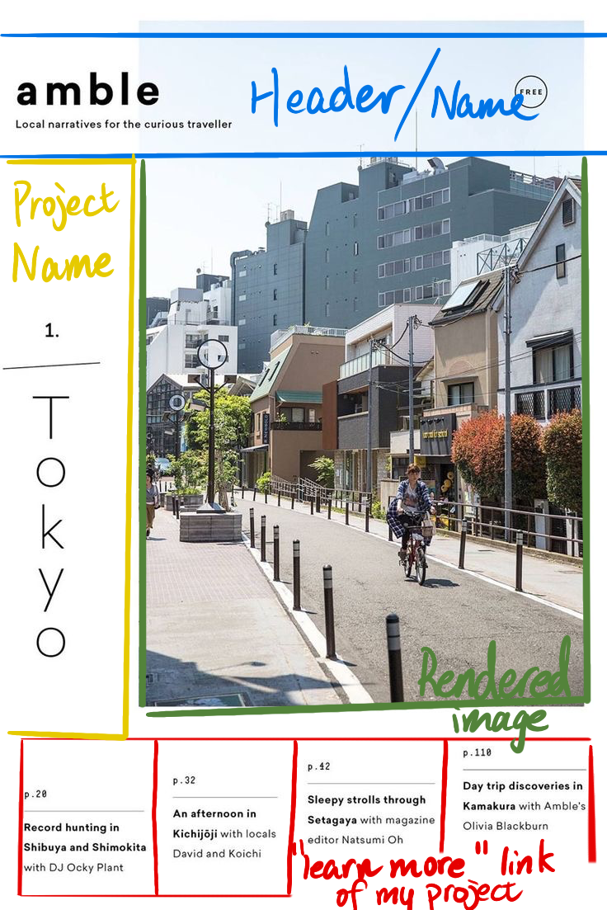
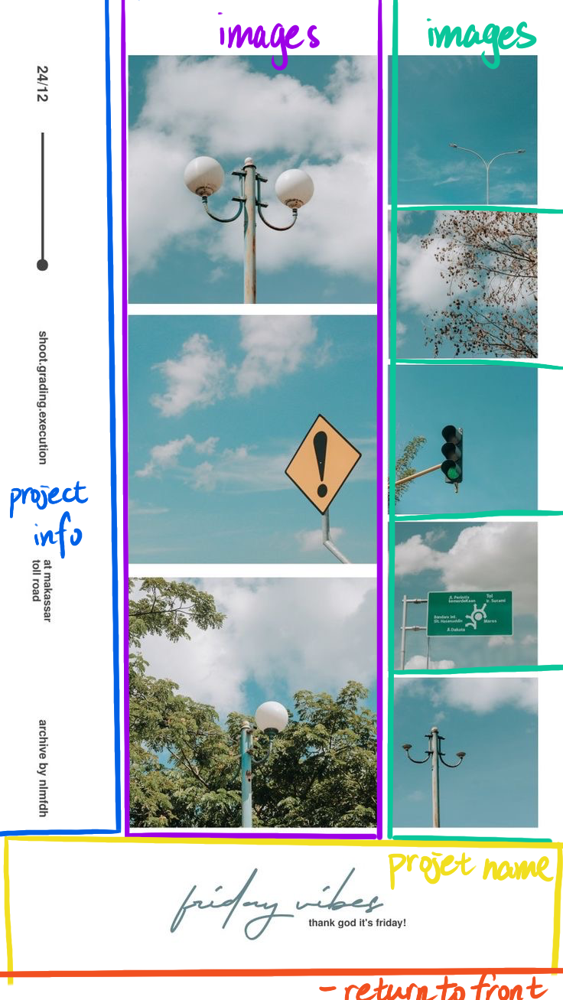
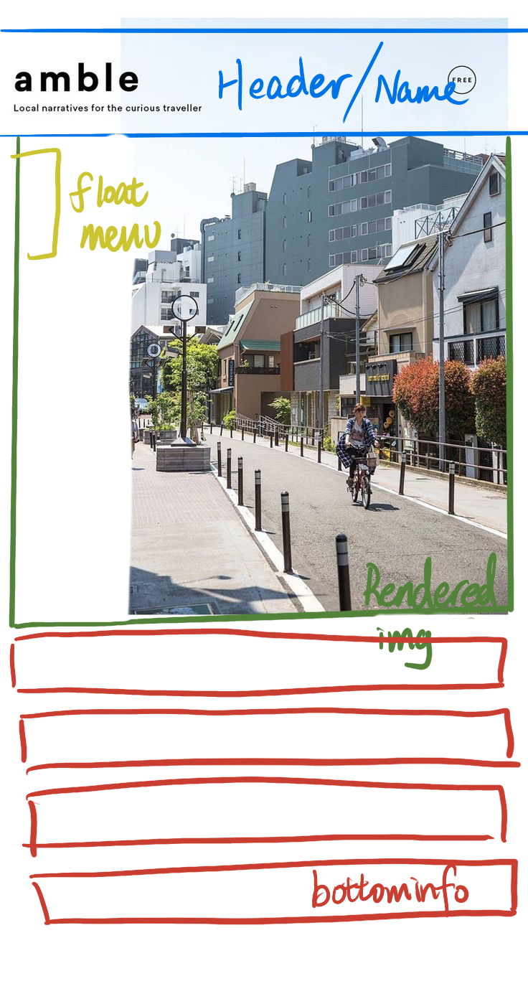

This document contains the design process, resources, and key decisions made during the development of the "One Page" Responsive Website.
Here are the sketches and plans for the grid layout. I feel like this layout is more suited for phones,
so I basically just made a few optimizations for the section part.
  The goal of this website is to create a decent portfolio for myself. The audience of this website will primarily be HR when I apply for jobs or campus recruiters.
I enjoyed learning new tools that can create interesting effects. One of the challenges I faced was figuring out how to achieve the stair-step effect at the bottom of the front page. Through this, I learned how to use specific child selectors in CSS, which became one of my favorite features of the project.
The most frustrating part of the process was when I modified the CSS and saw no response, leading me to question whether it was a CSS issue. In the end, it often turned out to be a simple spelling error in the HTML.
I implemented custom link styles using the following states:
Click the link below to view the spec.html file, which contains the initial build of the project based on the original design: The second linke is the more advance version the resposive one
{kind=link}
{kind=link}